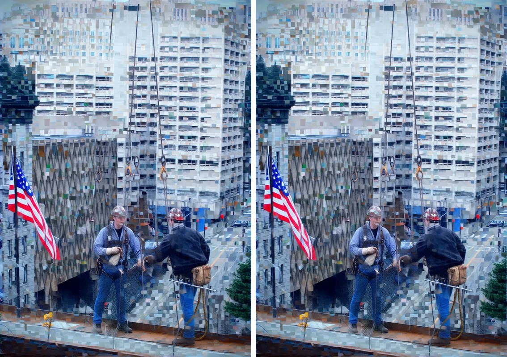

REFRACT
Photography Analysis & Enhancement

image.webp
Multi-LLM Analysis
52.0/100
Consensus Score
Original Review
openai
52.0/100
The scene has strong narrative content and a compelling juxtaposition of workers against dense urban architecture. The main limitation is severe compression/pixelation that obscures detail; after addressing that, modest tonal and color balancing plus a tighter crop will better emphasize the subjects.
- Reduce heavy compression artifacts/pixelation by exporting from a higher-quality source if available; if not, apply targeted noise reduction plus mild JPEG artifact reduction (e.g., Lightroom Denoise/Detail smoothing) and avoid aggressive sharpening
- Rebalance tonality: lower highlights (~-20 to -35) on the bright building, lift shadows slightly on the workers/platform (+10 to +25), and add a gentle midtone contrast S-curve
- Warm the white balance slightly (increase Temp a bit and reduce cyan/blue in shadows with Color Grading or HSL) while keeping neutrals neutral
Combined Improvements Applied:
- Reduce heavy compression artifacts/pixelation by exporting from a higher-quality source if available; if not, apply targeted noise reduction plus mild JPEG artifact reduction (e.g., Lightroom Denoise/Detail smoothing) and avoid aggressive sharpening
- Rebalance tonality: lower highlights (~-20 to -35) on the bright building, lift shadows slightly on the workers/platform (+10 to +25), and add a gentle midtone contrast S-curve
- Warm the white balance slightly (increase Temp a bit and reduce cyan/blue in shadows with Color Grading or HSL) while keeping neutrals neutral
- Crop/straighten to strengthen composition: trim some top background and right edge to reduce distraction, keep the flag and workers as the primary visual anchors, and ensure verticals feel intentional
- Apply selective sharpening/texture on the workers only (masking): add slight Texture/Clarity (+5 to +15) and sharpening with masking, while keeping the background smoother
Before & After Comparison
Original

Enhanced
Side-by-Side
